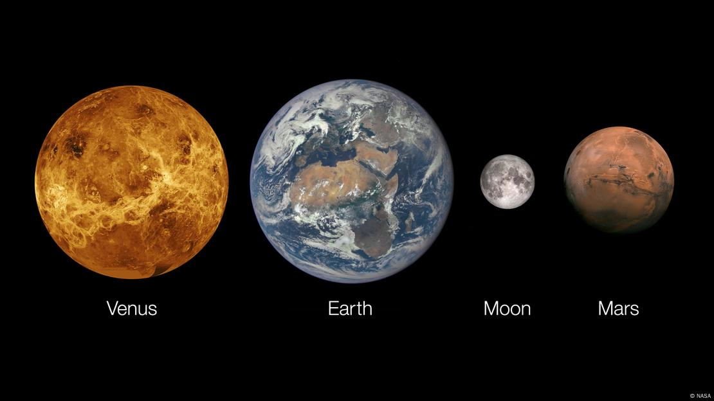
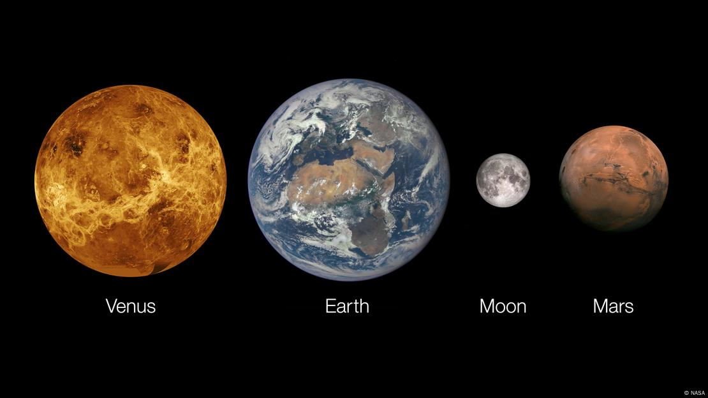

Venus
Venus es el segundo planeta del sistema solar y, a menudo, se le llama el "gemelo de la Tierra" debido a su tamaño y composición similares. Aunque ambos planetas comparten una estructura interna similar, las condiciones en Venus son completamente opuestas a las de la Tierra. Venus es un lugar extremadamente inhóspito con temperaturas superiores a 460°C, suficiente para derretir el plomo.
Características Físicas de Venus
Venus tiene un diámetro de aproximadamente 12,104 km, solo un 95% más pequeño que el de la Tierra. A pesar de su parecido en tamaño, la atmósfera de Venus es extremadamente densa y está compuesta principalmente de dióxido de carbono, con nubes gruesas de ácido sulfúrico que cubren completamente su superficie. La presión atmosférica en Venus es 92 veces mayor que la de la Tierra, lo que hace que el planeta sea aún más hostil.
El Clima de Venus
La atmósfera de Venus es el principal responsable de su clima extremo. El efecto invernadero en Venus es tan intenso que mantiene una temperatura promedio de 465°C en su superficie, lo que lo convierte en el planeta más caliente del sistema solar, incluso más caliente que Mercurio, que está más cerca del Sol. Las tormentas violentas y los vientos que soplan a más de 300 km/h contribuyen a la atmósfera caótica del planeta.
La Rotación de Venus
Venus tiene una rotación extremadamente lenta: un día en Venus (el tiempo que tarda en completar una rotación sobre su eje) dura 243 días terrestres. Curiosamente, Venus tiene una rotación retrógrada, lo que significa que gira en sentido contrario al de la mayoría de los planetas del sistema solar. Además, su día dura más que su año, ya que Venus completa una órbita alrededor del Sol en 225 días.
Exploración de Venus
A pesar de las condiciones extremas, Venus ha sido objeto de varias misiones espaciales. La sonda soviética Venera logró aterrizar en su superficie en la década de 1960 y principios de los 70, enviando las primeras imágenes y datos desde el planeta. En años recientes, se están desarrollando nuevas misiones para estudiar Venus, como la misión NASA VERITAS y la misión ESA EnVision.
Imágenes de Venus

 
